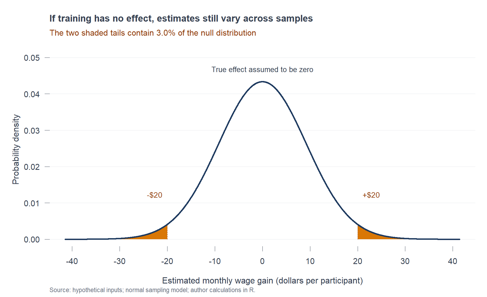

| Measure | Illustrative value |
|---|---|
| Estimated wage gain | $20 |
| Standard error | $9.2 |
| Two-sided p-value | 0.030 |
| 95% confidence interval for wage effect | $1.97 to $38.03 |
| Assumed program cost | $100 |
A P-Value of 0.03 Is Not a Funding Recommendation
statistics
econometrics
A hypothetical job-training decision shows what a small p-value can tell us, and what a policymaker still needs to know.
Imagine a city deciding whether to fund a job-training program. An evaluation reports higher wages and a p-value of 0.030. Does that mean a 97% chance the program works? And is it enough to justify spending public money?
The first answer is no. The second needs more information. The useful question is what this number tells a decision-maker, and what it leaves unanswered.
There is evidence that the probability interpretation causes difficulty. In a 2022 survey by Lytsy, Hartman, and Pingel, 53.3% of 75 doctoral students and 73.4% of 64 statisticians/epidemiologists interpreted a significant result as indicating that the null hypothesis was improbable. Those respondents do not establish how prevalent this interpretation is among all researchers or economists. They do provide a specific reason to examine it, rather than simply declaring that everyone gets p-values wrong.
Imagine a world where the program does nothing
Our example is hypothetical. Suppose a randomized evaluation estimates that training raises monthly wages by 20 dollars, with a standard error of 9.2 dollars. The standard error describes the estimate’s sampling uncertainty. Assume its sampling distribution is approximately normal with this known standard error; this simplified model lets us calculate the example directly in R.
The null hypothesis says that the true average wage effect is zero. Even in that no-effect world, repeated evaluations would produce different estimates because they observe different samples.
For a two-sided test, we count estimates at least as far from zero as the observed gain, in either direction. Here that means an estimate of at least +20 dollars or at most -20 dollars.

R gives a probability of about 3.0% for those outcomes under the null model. That is the p-value. It is a probability about possible results assuming no effect, not a probability that no effect is true.
Why the direction matters
The reversal is tempting because we usually want the second answer: after seeing the evaluation, how likely is the program to work? But the test begins by assuming a zero effect, then evaluates the result against that assumption. It does not assign probabilities to the competing explanations.
Think of a fire alarm: knowing how often an alarm sounds when there is no fire does not, by itself, tell you the chance that a fire exists when it sounds. You also need information about actual fires and the alarm’s behavior during them. Likewise, a probability for the hypothesis requires additional assumptions and information, not simply subtracting the p-value from one.
The American Statistical Association’s 2016 guidance explicitly distinguishes p-values from probabilities that hypotheses are true, and advises against basing policy decisions solely on a significance threshold.
Significant, but worth funding?
Because 0.030 is below 0.05, the result would conventionally be called statistically significant. That tells us the estimate is relatively unusual under the specified no-effect model. It does not tell us the benefit is large.
Now suppose the program costs 100 dollars per participant per month. The estimated wage gain is just 20 dollars. Its model-based 95% confidence interval runs from about 2 to 38 dollars. These results describe a positive but modest gain relative to the assumed cost.
This is not a complete benefit-cost analysis: effects might last beyond the evaluation, and training could produce benefits other than wages. The example nevertheless shows why crossing 0.05 cannot settle the funding decision.
What to ask next
For this evaluation, read the p-value alongside the estimated gain, uncertainty, study design, and program cost. The number answers how unusual the result would be under a no-effect model; deciding whether to fund the program requires a separate judgment about benefits and costs.
NoteSources and replication
The survey evidence comes from Lytsy, Hartman, and Pingel (2022), Upsala Journal of Medical Sciences, DOI 10.48101/ujms.v127.8760. Interpretive guidance comes from the ASA’s statement by Wasserstein and Lazar (2016), DOI 10.1080/00031305.2016.1154108. Both sources were accessed October 8, 2026.
All training-program amounts are invented teaching inputs, not estimates from an actual study. The normal approximation and known standard error are assumptions of this illustration. R/analysis.R reads data/example_inputs.csv and saves the figure, numeric results, plot data, and R session information to results/. The GitHub folder contains a README with replication instructions. No external data download or additional R analysis package is needed.
NoteView the R code
# A hypothetical training-program evaluation. No observed microdata are used.
# Run from the website root or from blog/posts/post1; only base R is required.
input_file <- if (file.exists("data/example_inputs.csv")) {
"data/example_inputs.csv"
} else {
"blog/posts/post1/data/example_inputs.csv"
}
post_dir <- dirname(dirname(input_file))
inputs <- read.csv(input_file)
results_dir <- file.path(post_dir, "results")
dir.create(results_dir, recursive = TRUE, showWarnings = FALSE)
gain <- inputs$estimate_monthly_usd[1]
standard_error <- inputs$standard_error_usd[1]
cost <- inputs$cost_monthly_usd[1]
confidence_level <- inputs$confidence_level[1]
stopifnot(is.finite(gain), gain > 0, is.finite(standard_error),
standard_error > 0, is.finite(cost), cost >= 0,
confidence_level > 0, confidence_level < 1)
# Under the zero-effect null, estimate / known SE follows a standard normal.
# Both tails count because this is a two-sided test.
z_observed <- gain / standard_error
p_value <- 2 * pnorm(-abs(z_observed))
critical_value <- qnorm((1 + confidence_level) / 2)
ci_lower <- gain - critical_value * standard_error
ci_upper <- gain + critical_value * standard_error
summary_results <- data.frame(
estimate_monthly_usd = gain,
standard_error_usd = standard_error,
z_statistic = z_observed,
p_value = p_value,
confidence_level = confidence_level,
ci_lower_usd = ci_lower,
ci_upper_usd = ci_upper,
cost_monthly_usd = cost
)
write.csv(summary_results, file.path(results_dir, "summary.csv"), row.names = FALSE)
# Display strings and the blog table are built from the calculated values.
p_text <- sprintf("%.3f", p_value)
tail_percent_text <- sprintf("%.1f", 100 * p_value)
gain_text <- sprintf("%g", gain)
se_text <- sprintf("%g", standard_error)
cost_text <- sprintf("%g", cost)
lower_text <- sprintf("%.0f", ci_lower)
upper_text <- sprintf("%.0f", ci_upper)
display_table <- data.frame(
measure = c("Estimated wage gain", "Standard error", "Two-sided p-value",
"95% confidence interval for wage effect", "Assumed program cost"),
value = c(paste0("$", gain_text), paste0("$", se_text), p_text,
sprintf("$%.2f to $%.2f", ci_lower, ci_upper), paste0("$", cost_text))
)
write.csv(display_table, file.path(results_dir, "display_table.csv"), row.names = FALSE)
# Save the exact curve data so the figure is reproducible without simulation.
x <- sort(unique(c(seq(-4.5 * standard_error, 4.5 * standard_error,
length.out = 2401), -gain, gain)))
density <- dnorm(x, mean = 0, sd = standard_error)
curve_data <- data.frame(estimate_monthly_usd = x, density = density,
in_two_sided_tail = abs(x) >= abs(gain))
write.csv(curve_data, file.path(results_dir, "null_curve.csv"), row.names = FALSE)
# Base-R graphic: the tails, rather than a probability for the hypothesis.
png(file.path(results_dir, "null_distribution.png"),
width = 1800, height = 1100, res = 180, bg = "white")
par(mar = c(5.2, 5.1, 5.4, 1.2), family = "sans", las = 1,
col.axis = "#374151", col.lab = "#374151", fg = "#374151")
plot(x, density, type = "n", axes = FALSE, ylim = c(0, max(density) * 1.14),
xlab = "Estimated monthly wage gain (dollars per participant)",
ylab = "Probability density", cex.lab = 1.05)
abline(h = pretty(c(0, max(density)), n = 4), col = "#E5E7EB")
left_tail <- x <= -gain
right_tail <- x >= gain
polygon(c(x[left_tail], rev(x[left_tail])),
c(density[left_tail], rep(0, sum(left_tail))),
col = "#D97706", border = NA)
polygon(c(x[right_tail], rev(x[right_tail])),
c(density[right_tail], rep(0, sum(right_tail))),
col = "#D97706", border = NA)
lines(x, density, lwd = 3, col = "#1E3A5F")
segments(c(-gain, gain), 0, c(-gain, gain),
dnorm(c(-gain, gain), 0, standard_error), col = "#92400E", lty = 2)
axis(1, at = pretty(range(x), n = 8), lwd = 0, lwd.ticks = 1)
axis(2, at = pretty(c(0, max(density)), n = 4), lwd = 0, lwd.ticks = 1)
mtext("If training has no effect, estimates still vary across samples", side = 3,
line = 3, adj = 0, font = 2, cex = 1.15)
mtext(sprintf("The two shaded tails contain %.1f%% of the null distribution", 100 * p_value),
side = 3, line = 1.55, adj = 0, cex = 1.03, col = "#92400E")
text(0, max(density) * 1.08, "True effect assumed to be zero", cex = 0.9)
text(c(-gain, gain), max(density) * 0.28,
labels = c(paste0("-$", gain_text), paste0("+$", gain_text)),
cex = 0.95, col = "#92400E", pos = c(2, 4))
mtext("Source: hypothetical inputs; normal sampling model; author calculations in R.",
side = 1, line = 3.9, adj = 0, cex = 0.76, col = "#6B7280")
dev.off()
writeLines(capture.output(sessionInfo()), file.path(results_dir, "sessionInfo.txt"))